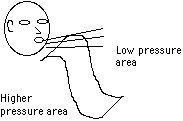
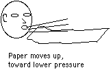
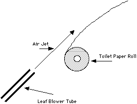
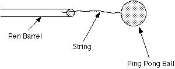
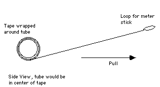
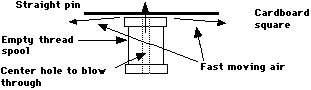
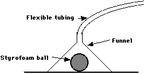
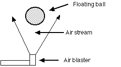
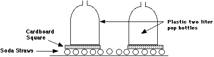

Vocabulary-
air pressure : Pressure exerted by the weight of air on an object in that air. There will be discussion about this when we describe the reason for the plunger being held onto a piece of clear plexiglass, when the rubber playground softball base is used to lift a chair using air pressure, when we use the Magdeburg disks being held together by air pressure and when we crush a 55-gallon drum using air pressure.
atmospheric pressure: This is also the pressure caused by air, but usually thought of as the normal value or standard value of 14.7 pounds per square inch. The atmospheric pressure at the place where we are on the face of the earth is usually less than this because we are above sea level, and hence have less "weight" pushing down on us. Again, used with the same activities as air pressure.
high pressure: A space where the pressure is more pounds per square inch than a neighboring space. We will be discussing the idea that the pressure is higher outside the 55-gallon drum than inside the drum.
low pressure: A space where the pressure is fewer pounds per square inch than a neighboring space. We will use this term along with the term high pressure in order to describe the resulting force that will tend to push something one way or the other.
molecular motion: The name given to the intrinsic property of all matter that is at normal temperature where the molecules of that matter are in a constant state of motion. We will be using this concept to help describe what causes air pressure. The molecules of air are forced downward by gravity, and also are in a constant state of movement, thus causing an enormous number of collisions in one second with the outsides of the plunger and plexiglass, the Magdeburg disks, the chair and the rubber base and the 55-gallon drum. When taken all together, these collisions cause the pressure against these objects.
pressure: In the context of our show, it will be the number of pounds per square inch exerted by gaseous molecules. When the number of pounds per square inch are multiplied by the number of square inches on an object, it is possible to determine the total force, the push on the object.
WHAT TO LOOK FOR
This is a simple demonstration dealing with Bernoulli’s Principle. The demonstrator will hold a piece of paper close to his lips, and blow across the top of the paper as it hangs down from his hands in front of his lips. The paper will respond by moving up, toward the stream of moving air. It would seem the paper would move away from the stream of air, but it does not. It moves toward the stream of air. This is shown in the diagrams below:

HOW IT HAPPENS
Bernoulli’s principle states that fluids in an area moving faster than the the surrounding area possess less pressure. Faster-moving fluid, lower pressure. (In general, fluids include liquids and gasses. Air is a gas and as such is classified as a fluid.) When the demonstrator holds the paper in front of his mouth and blows across the top, he is creating an area of faster-moving air. The slower-moving air under the paper now has higher pressure, thus pushing the paper up, towards the area of lower pressure. Perhaps you have noticed, for example, that an empty mayonnaise jar in your sink with water in it will move in, directly under the water faucet as you turn on the water. This is the same thing as we observe here. The water that is moving possesses less pressure, and the jar is pushed toward that area by the water that is not moving which has greater pressure.
Bernoulli’s Principle, when the speed of a fluid is increased the pressure in the fluid decreases, can be illustrated using the air from a leaf blower or a vacuum cleaner. The jet of air is the moving fluid which has the reduced pressure in it. If this reduced pressure is on the top of an object the normal atmospheric pressure below the object can lift the object. The object in this demonstration is a roll of toilet paper which is lifted and then move along with the jet of air. A full roll of toilet paper can be put into the air in a few seconds using this method.
Materials
A leaf blower or vacuum cleaner (adjusted to blow air). a roll of toilet paper, and rod for the toilet paper to spin on.
Instructions
Slip the rod through the cylinder in the toilet paper to allow it to spin. Most any rod will work, a tube use to protect golf clubs works very well. Have one person hold the rod by placing a hand on each side of the toilet paper roll. The hose or tube the direct the jet of air should be placed above the paper and aimed in a steep upward direction. Experiment a bit with the right angle and distance from the paper to get the maximum elevation and speed of the toilet paper.

(Bernoulli)
To explain this demonstration a good understanding of the Bernoulli effect along with terminal velocity is required. The ball is held up by the wind blast putting the ball at it’s terminal velocity. The ball moves up if the wind is faster than terminal or moves down towards faster air if the air speed is less than terminal velocity. The ball will always settle in at the right point where terminal velocity air is moving up and flowing around the ball.
The bigger question is why the ball stays centered in the stream of air? The air in the center of the air stream will be moving a little faster than the air towards the edge. This is due to the fact that the air at the sides rubs on the stationary air in the room and is slowed a little. If the ball begins to drift off center the faster air passing the ball will be on the side back towards the center. In Bernoulli faster air produces less pressure and the larger pressure (slower air) on the outside will cause the ball to be recentered. If you watch the ball you can see it being recentered almost all the time.
FOSS Connection: Air & Weather - Activity 1: Air Explorations
WHEN YOU GET BACK
(Bernoulli)
This demonstration relies on the Bernoulli Principle, which states that when fluid moves its ability to produce pressure is lowered and the faster the movement the lower the pressure. Fluids include liquids and gases and air is a mixture of gases, and is therefore a fluid. The ping pong ball sags until the top of the ball is in the fast air, being shot through the barrel, and the bottom is in the quiet air of the room. The quiet air has more pressure pushing up and keeping the ball from falling.
Materials
A ballpoint pen barrel or soda straw, a small piece of thread, a ping pong ball and some glue to attach the string to the pen barrel and the ping-pong ball.
Instructions

Attach the thread (about 3 to 4 inches in
length) to the pen barrel and to the ping-pong ball. Hold the pen
barrel horizontally and blow vigorously through it while holding the
ping-pong ball in line with the tube to get it in the path of the
rapidly moving air. Then let go of the ping-pong ball, and it will
stay in the moving air, since that is where the pressure is lowest.
See diagram below.
FOSS Connection: Air & Weather - Activity 2: Air Explorations
Grade 4 Weather Unit
Science Specialists Connection: Flight
(Bernoulli)
Bernoulli's (ber-nool'-ee) principle, states that as the velocity of fluid flow increases the pressure produced by the fluid decreases. This can be shown by pulling and rotating a cardboard tube rapidly through the air. The air next to the tube changes its velocity relative to the tube wall due to the spin.
In baseball the pitcher imparts different spins on the ball to produce the curve on the trajectory of the ball as it comes to the batter. They have names such as slider, curve down and in, curve down and out, etc.
In golf, hitting a drive that actually climbs as it leaves the club gives a greater distance and is a good analogy to this demonstration. Golfers also draw and fade the ball with all the clubs in order to play a shot to a certain landing point.
Materials
Cardboard tube about 18 inches long (wrapping paper tube will work) cloth or plastic tape about a meter long (a measuring tape such as used in sewing works well) and a meter stick.
Instructions

Find the center of mass of the tube and wrap the
tape measure around that point. Make a small loop in the other end of
the tape and fasten it with a piece of sticky tape. Put one end of
the meter stick through the loop, place the tube on a table and swing
the meter stick forward rapidly. The tube will spin and move forward,
moving upward in looping motion, see diagram.
FOSS Connection: Air & Weather - Activity 2: Air Explorations
Grade 4 Weather Unit
Science Specialists Connection: Flight
(Bernoulli)
Most of the time when we blow towards a light object it takes off in the direction of the moving blast of air. In this demonstration that simple concept is turned inside out by the Bernoulli principle. When air is moving it does not cause as much pressure on the surfaces it’s moving past as it would if it were quiet. In addition, the faster the air moves the pressure on the surfaces it’s moving past is less and less .
When we use a vacuum cleaner we often talk about the dirt being "sucked up" off the floor. It may not be comfortable at first, but the idea of suction is a false concept right from the start. There is no such thing as suction, just areas of high pressure next to areas of lower pressure and the Bernoulli effect. Students that write on the back of a desk that "...this class sucks..." should not be taken very seriously because they have learned little about the world. The vacuum cleaner creates high speed air above the dirt, the pressure above the dirt drops due to the Bernoulli effect and the air under the dirt pushes the dirt particles up into the air stream. Most modern day vacuums have some method of vibrating the carpet to make sure that the dirt has some air under it to do the lifting.
A common error made by people that carry things in the back of an open pickup truck is to forget when you are driving, fast air will rush across the top of your load. If your load contains materials that are light, have large surface areas, and trap quiet air under them you will get a large Bernoulli effect. The mattress in the pickup bed is a common example. It fits down quite well so we decide that the load is secure and away you go. Somewhere down the road we are surprised to see the mattress lifting up out of the box as if by magic!!!
Materials
A thread spool, straight pin, and a small piece of light cardboard.
Instructions
Push the pin through the center of the light cardboard square and insert the free end of the pin into the empty hole in the spool. The function of the pin is just to keep the cardboard square centered on the end of the spool. Try to push the cardboard off the by blowing air through the hole in the spool. The harder you try the stronger the Bernoulli force created that holds it in place. With practice you can actually prevent the cardboard from falling out, in an upside down orientation, until you stop creating a Bernoulli effect with your breath.

FOSS Connection: Air & Weather - Activity 1: Air Explorations
Air and Weather
(Bernoulli)
Whenever a fluid (Fluids are essentially gases and liquids) is moving faster than the fluid close to it, the faster moving fluid will have a lower pressure. This, among other things, is a very important concept in the flight of airplanes. In this demonstration, you can show the difference between air pressure and the force of air moving against something.
In a storm where the wind is blowing very hard, the pressure of the air inside a house is higher than the pressure of the air blowing across it. This can lift the roof off of a house.
If you are carrying a large sheet of plywood in the bed of a pickup truck, you may very well want to watch it carefully, since the air moving past the truck is at a lower pressure than the air trapped under the plywood, and it could be raised up high enough to catch in the wind and be blown away.
Materials
One Styrofoam ball about 2.5 inches in diameter, plastic funnel with a top larger than 2.5 inches, some flexible tubing to fit the small end of the funnel
Instructions
Place the Styrofoam ball on a flat surface and cover it with the large end of the funnel. While blowing into the tube attached to the small end of the funnel, lift the funnel off the flat surface. The Styrofoam ball will be lifted along with the funnel as long as you continue blowing into the tube.

FOSS Connection: Air and Weather - Activity 3: Using Air
Grade 4 Weather Unit
(Bernoulli)
To explain this demonstration a good understanding of the Bernoulli effect along with terminal velocity is required. The ball is held up by the wind blast putting the ball at it’s terminal velocity. The ball moves up if the wind is faster than terminal or moves down towards faster air if the air speed is less than terminal velocity. The ball will always settle in at the right point where terminal velocity air is moving up and flowing around the ball.
The bigger question is why the ball stays centered in the stream of air? The air in the center of the air stream will be moving a little faster than the air towards the edge. This is due to the fact that the air at the sides rubs on the stationary air in the room and is slowed a little. If the ball begins to drift off center the faster air passing the ball will be on the side back towards the center. In Bernoulli faster air produces less pressure and the larger pressure (slower air) on the outside will cause the ball to be recentered. If you watch the ball you can see it being recentered almost all the time.
This effect is used by vacuum cleaner sales people. A vacuum is set up to produce a blast of air in which a ball is floated. This impossible looking situation attracts attention and it can even be done at an angle. The ball will be located a little below the center of the air blast in this circumstance. In this case some Bernoulli effect works with the angled air blast to keep the ball up against the pull of gravity.
Materials
Some device to produce a jet of air. Vacuum cleaner, leaf blower, or maybe a school principal. Several light balls of different size and weight.
Instructions
Direct the air blast in an upward direction and place a ball in the air stream. You can tip the air blast to the side and the ball should continue to float and stay approximately centered. There is a limit to how far the system can be tipped to the side.

FOSS Connection: Air & Weather - Activity 1: Air Explorations
(Bernoulli)
This is another demonstration of Bernoulli’s Principle where an area of higher speed fluid is used to lower the pressure and the visible movement of two plastic pop bottles is used to show the results. Because empty
2-liter pop bottles are very light, they require very little force to move them if you can reduce the friction between them and the table. When you blow between the two bottles, it would seem that they would move apart, away from the blast of air. However, because of Bernoulli’s Principle, the pressure between the two bottles will be lower than the pressure on the outsides, causing a net force to be exerted on each bottle toward the other. Because you have reduced the friction between the bottles and the table top, they can move toward each other easily, demonstrating the force on each bottle towards the other. If the bottles don’t move on the first few tries direct the blast of air a little off the center line between the two bottles and sooner or later they will move easily together.
You have probably heard that standing too close to a railroad train as it passes can be dangerous. This is true because a moving train drags the air close to the cars along with it. This rapidly moving air, by Bernoulli’s principle will have a lower pressure than the still air a few feet away. The still air, having higher pressure, and being behind you if you are standing close will tend to push you toward the train. The effect is enough to actually move a person if you are not careful!
Materials
Two empty 2-liter plastic pop bottles, several soda straws, and two pieces of flat cardboard about 4 inches square.
Instructions
Place the cardboard squares about four inches apart on several straws set parallel to each other so that they can roll along on the straws. Place the two bottles on the two squares of cardboard. Direct a blast of air between the two bottles, and they will move toward one another, actually hitting into each other. See diagram.

FOSS Connection: Air & Weather - Activity 2: Air Explorations
<Back to: Physics Circus